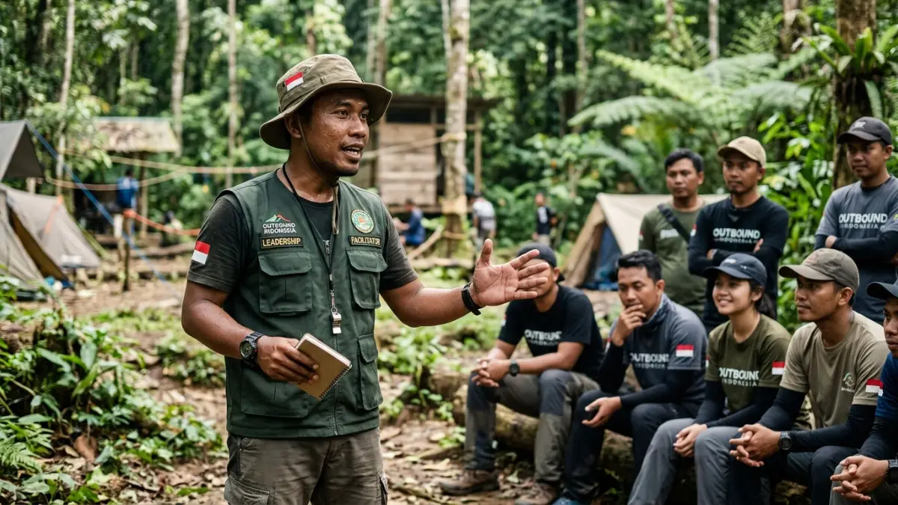

Peserta outbound menjalani aktivitas team building di alam terbuka. (Ilustrasi)
Peserta outbound menjalani aktivitas team building di alam terbuka. (Ilustrasi)
Outbound adalah kegiatan pelatihan atau rekreasi yang dilakukan di luar ruangan dengan pendekatan experiential learning, bertujuan membangun kerja sama tim, kepemimpinan, dan kepercayaan diri peserta melalui permainan dan tantangan fisik.
DAFTAR ISI
- Apa Itu Outbound Secara Definisi?
- Apa Perbedaan Outbound dan Team Building?
- Apa Tujuan Utama dari Kegiatan Outbound?
- Apa Saja Jenis Kegiatan Outbound yang Umum Dilakukan?
- Apa Manfaat Outbound bagi Peserta dan Organisasi?
- Apa Saja Faktor yang Menentukan Keberhasilan Outbound?
- Apa Saja Kesalahan Umum dalam Menyelenggarakan Outbound?
- Bagaimana Contoh Penerapan Outbound di Berbagai Konteks?
- Kesimpulan
- FAQ
1. Apa Itu Outbound Secara Definisi?
Outbound adalah kegiatan pembelajaran berbasis pengalaman (experiential learning) yang dilakukan di luar ruangan, biasanya di alam terbuka, dengan tujuan mengasah keterampilan sosial, emosional, dan kepemimpinan peserta.
Istilah "outbound" di Indonesia umumnya merujuk pada program pelatihan yang menggabungkan permainan kelompok, tantangan fisik ringan hingga menengah, dan sesi refleksi.
Konsep ini berakar dari metode Outward Bound yang dikembangkan sebagai pelatihan ketahanan diri, kemudian berkembang menjadi program yang lebih luas untuk kebutuhan korporat, pendidikan, dan komunitas.
Karakteristik utama outbound meliputi:
- Berlangsung di luar ruangan atau lingkungan yang berbeda dari rutinitas sehari-hari.
- Melibatkan aktivitas kelompok yang menuntut komunikasi dan kerja sama.
- Dipandu oleh fasilitator yang mengarahkan permainan sekaligus memimpin sesi refleksi.
- Memiliki tujuan pembelajaran yang jelas, bukan sekadar hiburan semata.
2. Apa Perbedaan Outbound dan Team Building?
Outbound adalah salah satu metode untuk mencapai team building, sedangkan team building adalah tujuan atau hasil yang ingin dicapai melalui berbagai metode, termasuk outbound.
Team building adalah istilah payung yang mencakup semua upaya membangun kekompakan tim, baik melalui outbound, workshop indoor, maupun aktivitas sosial lainnya.
Outbound menjadi salah satu metode team building yang populer karena menggabungkan unsur fisik, permainan, dan refleksi dalam satu paket.
Dengan kata lain, semua kegiatan outbound dapat dikategorikan sebagai team building, tetapi tidak semua team building berbentuk outbound.

Tantangan kepemimpinan dalam outbound melatih peserta mengambil keputusan di bawah tekanan.3. Apa Tujuan Utama dari Kegiatan Outbound?
Tujuan utama outbound adalah membangun kerja sama tim, kepemimpinan, komunikasi, dan kepercayaan diri peserta melalui pengalaman nyata yang dirancang secara terstruktur.
Beberapa tujuan spesifik yang umum dikaitkan dengan program outbound antara lain:
- Membangun kerja sama tim melalui permainan yang menuntut koordinasi dan saling percaya.
- Mengasah kepemimpinan lewat simulasi pengambilan keputusan dan pembagian peran.
- Meningkatkan komunikasi karena peserta harus menyampaikan ide dan mendengarkan rekan satu tim.
- Melatih kemampuan memecahkan masalah melalui tantangan yang membutuhkan strategi bersama.
- Menyegarkan pikiran dan mengurangi kejenuhan kerja dengan mengubah suasana dari rutinitas kantor atau kelas.
Pembahasan lebih rinci mengenai tujuan outbound untuk kerja sama dan kepemimpinan dapat dibaca pada artikel Tujuan Outbound untuk Membangun Kerja Sama dan Kepemimpinan.
4. Apa Saja Jenis Kegiatan Outbound yang Umum Dilakukan?
Jenis kegiatan outbound umumnya dikelompokkan menjadi ice breaking, team building games, leadership challenge, dan aktivitas petualangan alam, yang masing-masing memiliki tingkat intensitas dan tujuan berbeda.
Beberapa kategori utama meliputi:
- Ice breaking dan fun games — permainan ringan untuk mencairkan suasana di awal acara.
- Team building games — permainan yang menuntut kerja sama, strategi, dan komunikasi kelompok.
- Leadership challenge — simulasi yang melatih pengambilan keputusan dan tanggung jawab.
- Aktivitas petualangan (adventure activity) — seperti hiking, flying fox, atau rafting untuk melatih ketahanan diri.
- Workshop dan sesi motivasi — dikombinasikan dengan outbound agar pembelajaran lebih terinternalisasi.
5. Apa Manfaat Outbound bagi Peserta dan Organisasi?
Manfaat outbound mencakup peningkatan kerja sama tim, kepemimpinan, kepercayaan diri, dan kesejahteraan psikologis peserta, baik dalam konteks perusahaan, sekolah, maupun komunitas.
Secara umum, manfaat outbound dapat dirasakan pada dua level:
Bagi Individu:
- Meningkatkan kepercayaan diri dan kemampuan mengelola tekanan.
- Melatih adaptasi terhadap situasi yang tidak terduga.
- Memperkuat kemampuan komunikasi interpersonal.
Bagi Organisasi:
- Memperkuat kekompakan dan rasa saling percaya antaranggota tim.
- Membantu mencairkan konflik internal melalui aktivitas bersama di luar rutinitas kerja.
- Mendukung budaya kerja yang lebih terbuka dan kolaboratif.
Riset tentang lingkungan belajar berbasis simulasi pada 2026 menunjukkan bahwa rasa aman secara psikologis (psychological safety) menjadi faktor penting agar peserta berani berpartisipasi aktif, bertanya, dan mencoba tanpa takut dihakimi selama sesi outbound berlangsung.
Selain itu, kajian mengenai tim kerja hybrid pada periode 2025-2026 juga menunjukkan bahwa interaksi tim yang terstruktur, termasuk melalui outbound, tetap relevan bahkan semakin dibutuhkan ketika sebagian anggota tim bekerja dari lokasi berbeda.
6. Apa Saja Faktor yang Menentukan Keberhasilan Outbound?
Keberhasilan outbound ditentukan oleh kualitas fasilitator, kejelasan tujuan program, kesesuaian aktivitas dengan kebutuhan peserta, dan sesi refleksi setelah kegiatan berlangsung.
Beberapa faktor kunci yang perlu diperhatikan:
- Kompetensi fasilitator dalam memandu aktivitas sekaligus memimpin debriefing atau sesi refleksi.
- Kejelasan tujuan program, apakah difokuskan pada kepemimpinan, kerja sama tim, atau relaksasi.
- Kesesuaian aktivitas dengan karakteristik peserta, termasuk usia, kondisi fisik, dan latar belakang budaya kerja.
- Keamanan pelaksanaan, mencakup lokasi, peralatan, dan prosedur keselamatan.
- Tindak lanjut pascakegiatan, agar pembelajaran dari outbound dapat diterapkan kembali di lingkungan kerja atau belajar sehari-hari.
7. Apa Saja Kesalahan Umum dalam Menyelenggarakan Outbound?
Kesalahan umum dalam outbound antara lain memilih permainan tanpa tujuan yang jelas, mengabaikan sesi refleksi, dan tidak menyesuaikan aktivitas dengan kondisi peserta.
Beberapa kesalahan yang sering ditemui:
- Memilih permainan populer tanpa mempertimbangkan kebutuhan spesifik tim.
- Melewatkan sesi debriefing sehingga pengalaman lapangan tidak diubah menjadi pembelajaran yang melekat.
- Tidak memperhitungkan kondisi fisik atau kesehatan peserta sebelum menentukan tingkat kesulitan aktivitas.
- Kurangnya persiapan aspek keselamatan, seperti pengecekan peralatan dan lokasi.
- Menganggap outbound sebagai acara hiburan semata tanpa target pembelajaran yang terukur.
8. Bagaimana Contoh Penerapan Outbound di Berbagai Konteks?
Contoh penerapan outbound berbeda-beda tergantung konteksnya, mulai dari sekolah yang menekankan pembentukan karakter, komunitas yang mempererat silaturahmi, hingga perusahaan yang berfokus pada produktivitas tim.
- Sekolah: outbound digunakan untuk melatih kedisiplinan, kerja sama, dan kepercayaan diri siswa melalui permainan kelompok yang aman dan edukatif.
- Komunitas: outbound dimanfaatkan untuk mempererat silaturahmi antaranggota serta menyamakan visi bersama.
- Perusahaan: outbound umum digunakan sebagai bagian dari program pengembangan SDM, terutama menjelang awal tahun, setelah proyek besar selesai, atau sebagai bagian dari family gathering.
9. Kesimpulan
Outbound adalah metode pembelajaran berbasis pengalaman di luar ruangan yang efektif untuk membangun kerja sama tim, kepemimpinan, dan kepercayaan diri, asalkan dirancang dengan tujuan yang jelas dan dipandu fasilitator yang kompeten.
Sebelum memilih program outbound, pastikan tujuan pelatihan, karakteristik peserta, dan aspek keselamatan sudah dipertimbangkan secara matang, serta sesi refleksi tetap menjadi bagian tak terpisahkan dari kegiatan.
Referensi umum mengenai metodologi pelatihan berbasis pengalaman dapat dipelajari lebih lanjut melalui sumber seperti Outward Bound International (outwardbound.net).